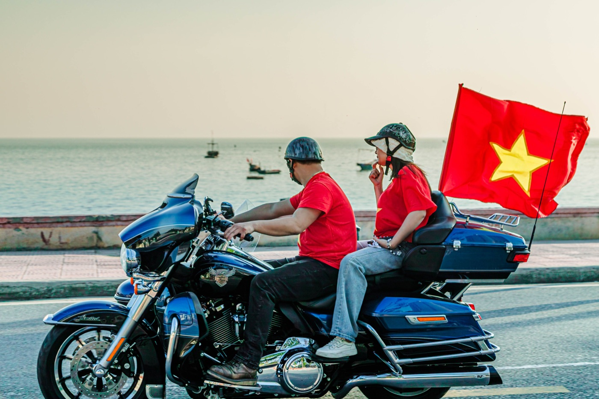
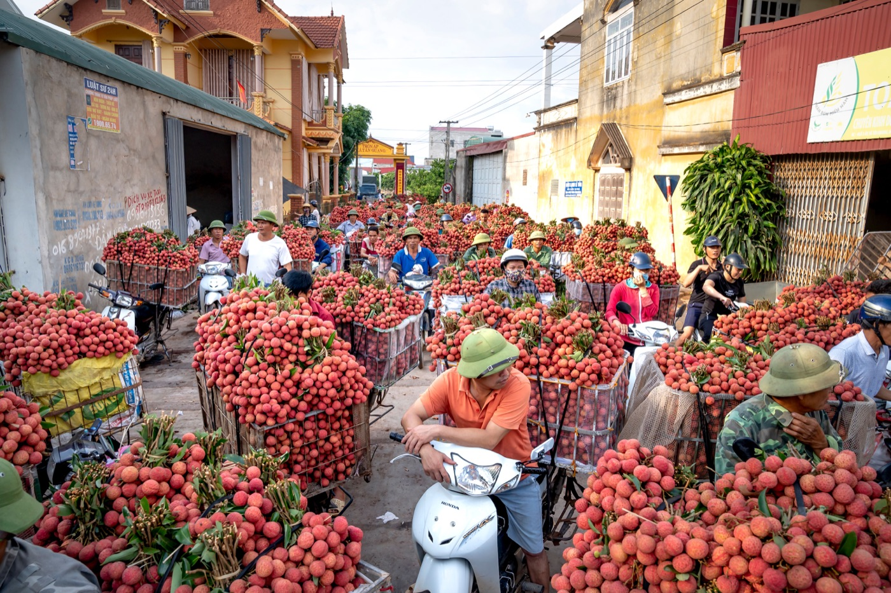

Как ездить на байке в жару во Вьетнаме

На скорости жара ощущается слабее, поэтому обезвоживание легко заметить слишком поздно. Солнце, горячий воздух от дороги и плотный шлем снижают концентрацию. Безопасная поездка начинается с выбора времени, воды и маршрута, а не с попытки быстрее добраться до кондиционера.
Выбирай время и маршрут
Длинные поездки удобнее планировать утром или ближе к вечеру. В середине дня выбирай маршрут с понятными остановками, заправками и магазинами, где можно пополнить воду. Не строй план впритык: жара снижает темп и требует дополнительных пауз.
Одежда для байка в жару
Открытая кожа быстро обгорает и не защищает при падении. Лучше лёгкая светлая одежда с длинными рукавами, закрытая обувь, перчатки и исправный шлем с вентиляцией. Солнцезащитные очки должны хорошо держаться и не искажать обзор, но затемнённый визор нельзя использовать после наступления темноты.

Вода и остановки
Пей понемногу до появления сильной жажды. В дальней поездке пригодится вода и средство для восполнения электролитов, но оно не заменяет обычную воду и отдых. Останавливайся в тени, снимай шлем и давай телу остыть. Алкоголь перед поездкой несовместим с безопасным управлением и усиливает обезвоживание.
Признаки, при которых нужно остановиться
- головная боль, тошнота или внезапная слабость;
- головокружение и ухудшение реакции;
- судороги, спутанность мыслей или необычная сонливость;
- перестал нормально замечать зеркала и дорожные знаки;
- появилось ощущение, что хочется «просто быстрее доехать» любой ценой.
Остановись в безопасном месте, перейди в прохладу, пей воду небольшими порциями и попроси помощи. При спутанности сознания, обмороке или резком ухудшении состояния нужна срочная медицинская помощь; продолжать поездку нельзя.
Что происходит с байком
Перед поездкой проверь давление в шинах на холодных колёсах по рекомендации производителя. Не выпускай воздух из нагретой шины только потому, что показание выросло после дороги. Следи за предупреждениями на панели, запахом топлива, необычным звуком и потерей тяги. Не открывай горячие системы и не трогай выхлоп.
Телефон и вещи
Смартфон под прямым солнцем может перегреться и отключить навигацию. Не охлаждай его резко водой или льдом: остановись в тени и дай остыть естественно. Не оставляй в закрытом багажнике аэрозоли, зажигалки и чувствительную электронику. Документы и воду храни так, чтобы груз не мешал рулю.
После остановки на солнце
Сиденье и металлические детали сильно нагреваются. Перед стартом проверь их рукой осторожно, не касаясь выхлопа. Открой багажник аккуратно и проветри шлем. Первые минуты после жары двигайся спокойно: концентрация восстанавливается не мгновенно.
Короткий вывод
В жару выигрывает не самый быстрый, а тот, кто планирует воду, тень и остановки. Закрытая лёгкая одежда, исправный шлем и спокойный маршрут сохраняют внимание. Для навигации используй советы из статьи про телефон на байке, а перед стартом пройди проверку за две минуты.